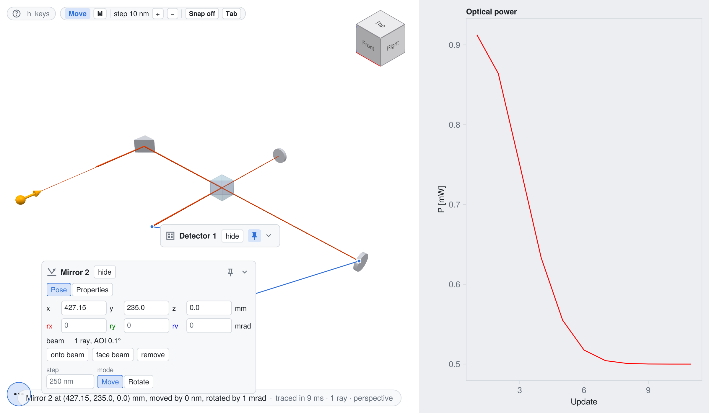
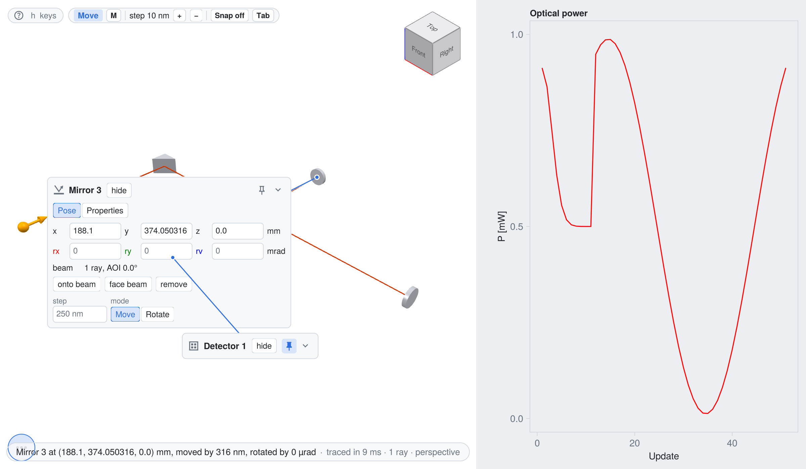

Interactive Michelson interferometer
This example shows how to build an interactive application with live_view, which is based on the live rendering functions of BeamletOptics (live_render!, update_render!). The Michelson interferometer of the Michelson interferometer tutorial is rendered into a GLMakie window, in which the components can be moved and rotated with the mouse and keyboard. After each change, the system is solved again and the beam path, the fringe pattern on the detector and the optical power are updated live.

The full script can be found here. Running it from the REPL opens the interactive window.
Setting up the system
The system is identical to the tutorial, but without the optomechanical parts. A GaussianBeamlet is used as the HeNe laser source.
using GLMakie, BeamletOptics, BeamletOpticsGUI
const BMO = BeamletOptics
const cm = 1e-2
const mm = 1e-3
λ = 632.8e-9
w0 = 0.65mm / 2
M2 = 0.7e-3 / BMO.divergence_angle(λ, w0, 1)
beam = GaussianBeamlet([0.0, 0, 0], [0.0, 1, 0], λ, w0; M2)
NBK7 = DiscreteRefractiveIndex([λ], [1.51509])
rpm = RightAnglePrismMirror(25mm, 25mm)
zrotate3d!(rpm, deg2rad(45))
translate3d!(rpm, [0, 23.5cm, 0])
cbs = CubeBeamsplitter(BMO.inch, NBK7)
zrotate3d!(cbs, deg2rad(-90))
translate_to3d!(cbs, [18.81cm, 23.5cm, 0])
m1 = RoundPlanoMirror(BMO.inch, 5mm)
zrotate3d!(m1, deg2rad(-90))
translate3d!(m1, [42.715cm, 23.5cm, 0])
m2 = RoundPlanoMirror(BMO.inch, 5mm)
translate3d!(m2, [18.81cm, 37.405cm, 0])
pd_size = 5mm
pd = Detector(pd_size)
translate_to3d!(pd, [18.81cm, 9.595cm, 0])
system = System([rpm, cbs, m1, m2, pd])Custom updates
The on_change callback is called after each full solve with the moved component, or nothing for the initial solve. Here, it records the optical power on the detector into a vector, which is plotted by an own panel below. The intensity is evaluated on the full detector area, which makes the movement of the fringes visible:
full_area = (; x_min = -pd_size / 2, x_max = pd_size / 2, z_min = -pd_size / 2, z_max = pd_size / 2)
power = Point2f[]
function record_power!(gui, obj)
P = isnothing(BMO.hits(pd)) ? 0.0 : optical_power(pd; n = 100, full_area...)
n = isempty(power) ? 1 : last(power)[1] + 1
push!(power, Point2f(n, 1e3 * P))
length(power) > 300 && popfirst!(power)
return nothing
endErrors in the callback are logged once and do not interrupt the interaction.
Opening the interactive window
A single call of live_view opens a complete interactive window for the system and the beam: the 3D view and a status line. The card of every Detector has a page "Results" with its detector view, the intensity for Gaussian beamlets or the spot diagram and PSF for rays, together with the optical power or the number of rays. With detectors = [pd => (:intensity, full_area)], the card of the photodiode starts pinned with the expanded intensity view. By default, the intensity is cropped around the beam, here the full detector area is evaluated instead, which is also the area that "fit" shows. The optical power is plotted by an own panel, added via add_panel!: the do block builds an axis into the layout of the panel and returns the function that updates the plot after each full solve:
gui = live_view(system, beam; size = (1200, 700), detectors = [pd => (:intensity, full_area)],
on_change = record_power!, layout = :compact)
add_panel!(gui, "Optical power") do layout
ax = Axis(layout[1, 1]; xlabel = "Update", ylabel = "P [mW]")
pts = Observable(copy(power))
lines!(ax, pts; color = :red)
return gui -> (pts[] = copy(power); autolimits!(ax))
end
display(gui)The panel is placed by the layout of the window: in a column right of the 3D view in the default layout = :compact, as a tab of the analysis dock with layout = :app. There, the panel is only updated while its tab is shown, which is why the power is recorded by on_change, which runs after every full solve.
After each change, live_view empties all detectors, solves the system again and updates the beam and the shown detector views. There is no need to call solve_system! or update_render! manually. The figure, the 3D view and the controls are available as gui.fig, gui.ax and gui.controls, e.g. to add static context via render!(gui.ax, ...). Several systems can be shown in the same view via live_view(system1 => beam1, system2 => beam2), and sliders for custom parameters can be added via the sliders keyword argument.
Controls
The components are moved via kinematic_controls!, see Kinematic controls for all controls. A click selects a component, a drag on the selected component moves it in the horizontal plane, and every other drag rotates the camera. The arrow keys and Page Up/Page Down move the selected component along the green, red and blue arrow above it, or rotate it around the rings after switching to the rotate mode with m. The step size is changed with + and -, Backspace resets the component and h shows an overlay of all controls. The laser can be moved and tilted as well, via the orange marker at its start point. The key v switches to the spectator mode, in which the system can be viewed without moving anything by accident. Keyword arguments such as the initial fine_step or the rotation_axis are passed from live_view to kinematic_controls!.
Since the interferometer is sensitive to changes in the order of the wavelength, the keyboard controls are best suited for alignment. Rotating the mirror m1 by 1 mrad generates the fringes shown above. Moving the mirror m2 by $\lambda/2$ changes the optical path length by $\lambda$, which corresponds to one period of the optical power:
